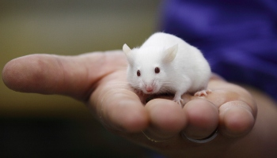

Los medicamentos ya no necesitan ser probados en animales antes de los ensayos en humanos, anuncia la FDA
La nueva ley modifica la Ley Federal de Alimentos, Medicamentos y Cosméticos de EE. UU., que se aprobó en 1938 para supervisar la seguridad de los alimentos, medicamentos, dispositivos médicos y cosméticos. Antes de su revisión, la FDA exigía que un fármaco se probara en una especie de roedor, como un ratón o una rata, y en una especie que no era un roedor, como un mono o un perro, para obtener la aprobación.
Pero estos modelos animales son costosos y, a menudo, ineficaces, algunos argumentan: Los modelos animales suelen equivocarse más de lo que aciertan, dijo a ScienceInsider Don Ingber, un bioingeniero de la Universidad de Harvard cuyo laboratorio desarrolló la tecnología de chips de órlineganos, que es una alternativa a las pruebas con animales.

Animales libres
¿Cuánto dura una resaca? Hasta 4 semanas si bebe 60 pintas
Las resacas típicas a menudo se atribuyen a una deshidratación leve. El alcohol suprime la liberación de vasopresina, una hormona producida por el cerebro que envía señales a los riñones para que retengan líquido. Esta falta de vasopresina hace que orines más y pierdas más líquidos.
Bebe sin resaca
Sin embargo, la deshidratación es solo uno de los problemas en cuestión. El exceso de alcohol también puede afectar la calidad del sueño, irritar el estómago, causar inflamación y provocar la acumulación de subproductos químicos no deseados. El más infame de estos es el acetaldehído, un compuesto tóxico producido por la descomposición del alcohol en el hígado.
Afortunadamente, el acetaldehído eventualmente se descompone en el cuerpo, pero esto puede llevar algún tiempo. No hay mucho que pueda hacer para solucionar este problema aparte de esperar. Eso explica por qué una desagradable resaca puede seguir acechando implacablemente incluso después de haber bebido agua, analgésicos y un desayuno decente.
Cuantas bebidas?
Peso corporal, lb
100
140
180
220
Uno
.04
.03
.02
.02
Dos
.08
.05
.04
.03
Tres
.11
.08
.06
.05
Cuatro
.15
.11
.08
.05
Salud y Medicina: Otras Noticias
El ayuno intermitente mejora la salud general y la calidad de vida, sugiere un estudio
Según un estudio, el ayuno intermitente en una rutina 16:8 podría generar una serie de resultados positivos para la salud y reducir la fatiga. El estudio siguió a los participantes que ayunaron durante 16 horas durante cinco días a la semana durante un período de tres meses y descubrió que aumentaron múltiples marcadores de buena salud, junto con una disminución en un marcador conocido por la progresión del tumor.
La enfermedad de Parkinson podría tratarse con medicamentos para la tos si un nuevo ensayo tiene éxito
Ambroxol is a type of cough medicine known as an expectorant. It works by thinning down the sticky phlegm build-up caused by respiratory diseases such as bronchitis, making it easier for patients to clear their congestion by coughing. But a 2009 study planted the seed that could lead to a whole other use for this drug.
Tal vez no se jubile antes de tiempo, podría estar relacionado con el deterioro cognitivo
Los últimos años han mostrado un gran aumento en el interés por el llamado movimiento “FIRE” (Independencia financiera, jubilación anticipada), en el que las personas trabajan duro para ahorrar suficiente dinero para jubilarse anticipadamente y disfrutar de una jubilación estable jugando al golf y caminando por la playa. . Sin embargo, una nueva investigación sugiere que puede no ser el sueño que muchos afirman que es.